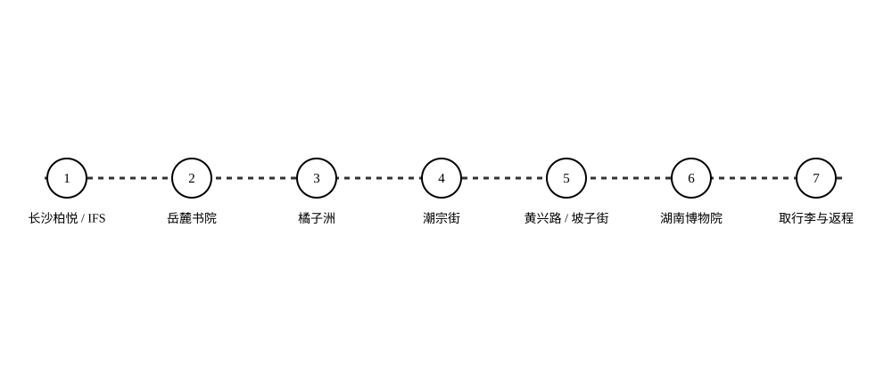

白天看书院、江心洲与老街，夜晚走进霓虹与烟火。沿路探索故事、品尝小吃、收集城市印章，最后带着旅行手册返程。
WASD / 方向键移动 · 拖动转视角 · E互动 · V切视角手机：虚拟摇杆、拖动视角和互动按钮
每个章节可自由漫步；接驳点连接相邻景点。完成故事与小吃互动获得印章。周日上午博物院可跳过，随后取行李、选择高铁或机场返程。
另设“轻松少走路”和“韶山一日”路线。湖南其他景点留在旅行手册图鉴里，避免混入两天主线。
